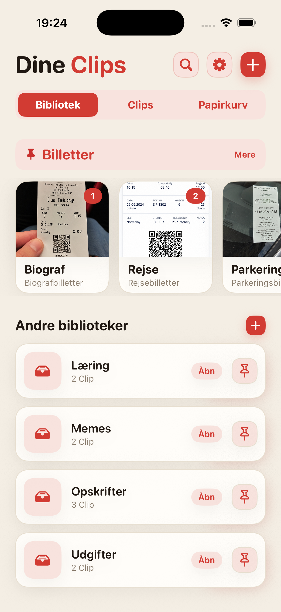
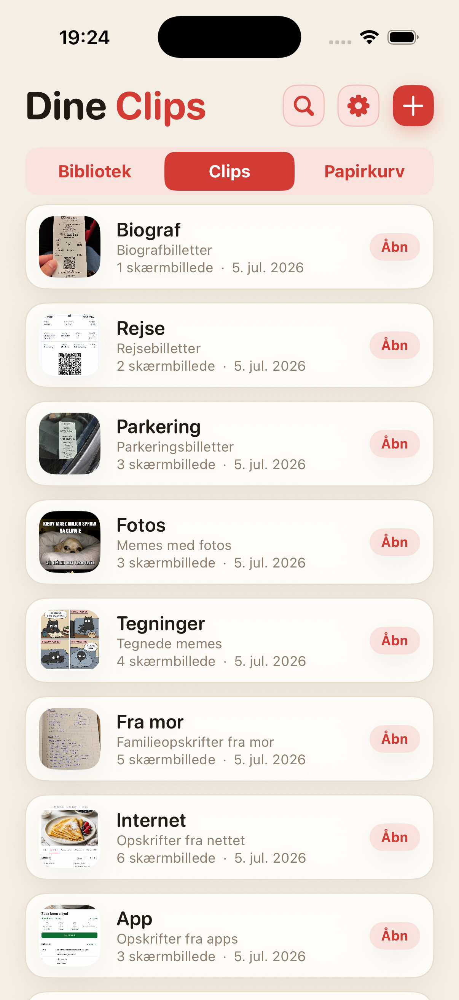
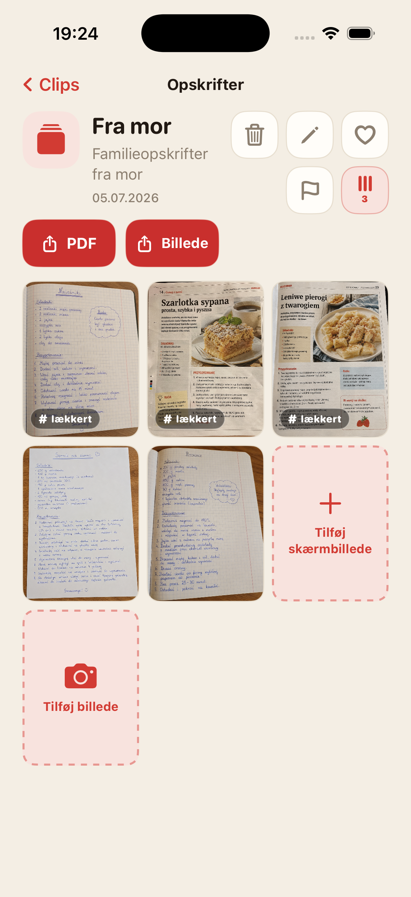
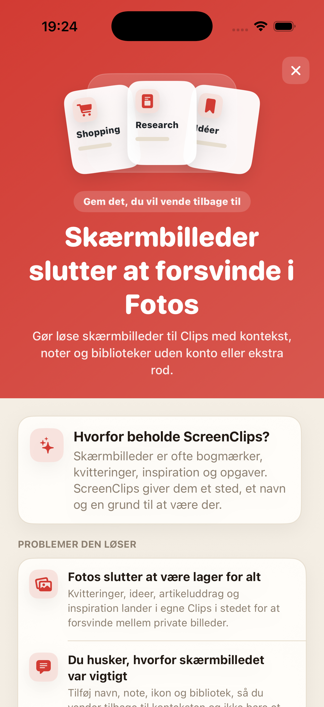

Skærmbilleder drukner i mængden
Du gemmer noget vigtigt, og en uge senere gennemtrawler du kamerarullen som om det var bevismateriale.
Gør løse skærmbilleder til Clips med navn, note og bibliotek. Ingen konto, ingen sky og ingen endeløs jagt gennem kamerarullen.

Kvitteringer, opskrifter, billetter, idéer og artikeludklip ender ved siden af selfies, memes og tilfældige billeder af loftet. Vi byggede skyen, men mistede stadig skærmbilledet med hoteladressen.
Du gemmer noget vigtigt, og en uge senere gennemtrawler du kamerarullen som om det var bevismateriale.
Billedet alene er ofte ikke nok. ScreenClips lader dig tilføje navn og note.
Rejser, arbejde, shopping og læring fortjener hver deres sted, ikke én endeløs bunke i Fotos.
Del emner op som opskrifter, kvitteringer, billetter, research, læring eller andet, du faktisk vil kunne finde igen.
Et Clip er en lille samling omkring én ting. Det har et navn, en beskrivelse og sine egne skærmbilleder.
Åbn et bibliotek, vælg et Clip, og alt du har brug for ligger allerede samlet.

ScreenClips prøver ikke at gætte for dig. Appen giver en enkel struktur: et bibliotek til emnet, et Clip til den konkrete ting og skærmbilleder eller fotos indeni.
Saml materialer i Clips, og byg videre på dem, efterhånden som emnet vokser.
Gør et Clip til en læsbar fil, når du vil sende det eller gemme det uden for appen.
Favoritter, markeringer og orden der, hvor der før kun var håbløs scrolling.

ScreenClips fungerer lokalt. Du behøver ikke en konto for at få orden, og du skal ikke aflevere kvitteringer, noter og planer til endnu en tjeneste, der gerne vil “forbedre oplevelsen”.
Premium gør ikke appen kompliceret. Det giver bare mere plads til biblioteker, Clips og skærmbilleder. Prisen vises i App Store.
Hent iApp Store
Nej. Når du fjerner et element fra et Clip, slettes originalen ikke fra Fotos.
Ja. ScreenClips er bygget som en lokal organizer på din iPhone.
Nej. ScreenClips kræver ikke en konto for at organisere dine Clips.
Ja. Du kan tilføje både skærmbilleder og fotos, når de hører til et Clip.
ScreenClips organiserer de ting, du gemmer “til senere”. Denne gang kan senere faktisk findes.
Hent iApp Store